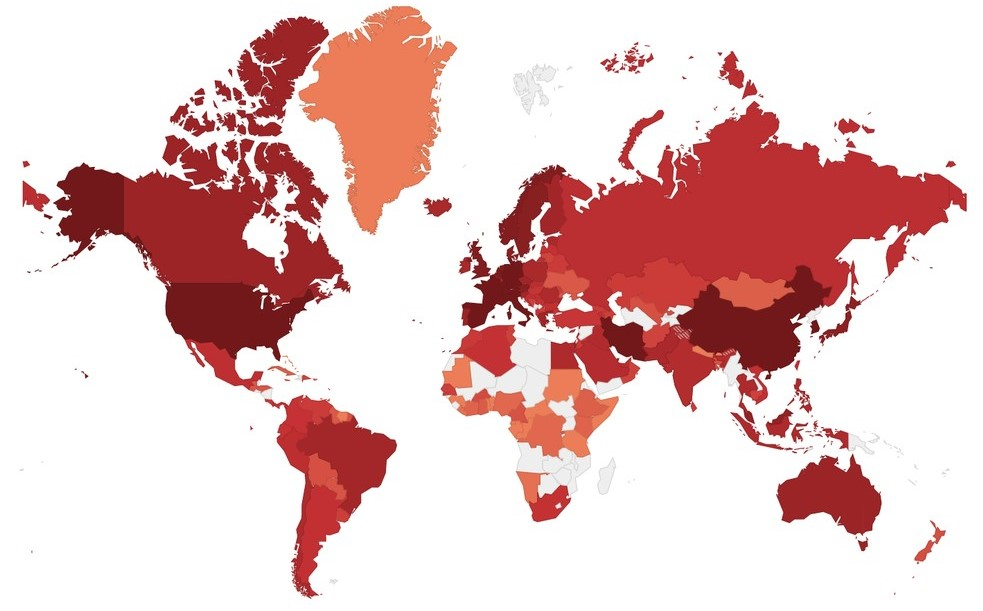

Corona Virus no Brasil
Imagem representando a taxa de mortalidade por semana no Brasil desde Abril de 2020
Dados No Brasil
Desde 26 de fevereiro de 2020, data em que foi descoberto o primeiro caso de corona vírus no Brasil, muitas pessoas acharam que o vírus não chegaria ao Brasil, e por isso não se prepararam. Mas esse foi o erro de muitos e que contribuiu para o alastramento vírus pelo país. Os casos de COVID-19 continuaram subindo continuamente por todo o Brasil dando início a quarentena, e posteriormente ao desemprego e o abalo na economia.
Com o caos estabelecido, deu-se início então ao desenvolvimento de vacinas no Brasil, como a do Instituto Butantan em parceria com a Sinovac nomeada de CoronaVac e a Astrazeneca da Fundação Oswaldo Cruz em parceria com a universidade de Oxford. Em 17 de Janeiro de 2021, com a aprovação da Anvisa, se aplica a primeira vacina no Brasil, com um tempo recorde de menos de um ano para a produção da vacina, coisa que antes nunca havia acontecido no mundo.
Mesmo com vacinas sendo aplicadas em todo o território brasileiro, os casos positivos para COVID-19 junto com as estatísticas de morte não paravam de crescer, hoje o número de mortos pelo vírus no Brasil passa de 610 mil mortes. Mas mesmo com um número tão alto de mortes, não pode ser deixado de lado que mais de 19 milhões de pessoas foram curadas do COVID, somos o terceiro país no mundo que mais vacina diariamente com 59% da população vacinada, o que nos deixa em segundo lugar como país com a maior parte da população já imune ao vírus.

ante. Curabitur tristique massa nisl, a accumsan nisl sodales eget. Aenean tincidunt sem vel elit porttitor, vitae ullamcorper nisi ultrices. Suspendisse eu mi eu tortor eleifend dapibus nec eget quam. Etiam gravida est sed purus efficitur faucibus. Vestibulum lobortis, urna vitae feugiat elementum, elit justo sollicitudin odio, sed ornare augue nulla eget mi
Conona Virus no Mundo
Imagem representando a contaminação dos paises pelo Corona Virus
Dados No Mundo
Em 8 de dezembro de 2019 se tem notícia dos primeiros casos de corona Vírus no mundo, no hospital Wuhan, na China. Data que o mundo começou a passar por uma das piores pandemias de todos os tempos, com o vírus se espalhando rápido pela cidade de Wuhan, e posteriormente por toda a China. Visitantes e imigrantes de outros países começam a voltar para suas terras atais levando consigo o vírus que como podemos ver na imagem acima, quase nenhum país ficou sem uma pessoa contrair o vírus. O vírus afetou em grande maioria as pessoas mais idosas no qual o sistema imunológico é mais fraco. Países da Europa sofreram bastante com isso pois grande parte da população neste continente é mais velha. Estados Unidos mesmo fechando as fronteiras como muitos outros países não escaparam do vírus e desde o início da pandemia teve uma alta taxa de casos e mortalidade.
De acordo com a AFP (Agence France-Presse), a covid-19 matou mais de 4,5 milhões de pessoas ao redor do mundo incluindo idosos, adultos e crianças desde o início da pandemia. Com um total de 10000 mortes por dia ao redor do mundo, o número de mortes mundial aumenta cada vez mais. Por causa da vacina estar sendo aplicada em todos os países do mundo, muitas pessoas acham que a pandemia já acabou e começaram a aglomerar, o que faz pessoas continuarem contraindo o vírus e morrendo por causa disso. Mesmo com altas taxas de morte, outro número que não para de crescer é o de pessoas curadas ao redor do mundo que já supera a marca dos 150 milhões de curados.
ante. Curabitur tristique massa nisl, a accumsan nisl sodales eget. Aenean tincidunt sem vel elit porttitor, vitae ullamcorper nisi ultrices. Suspendisse eu mi eu tortor eleifend dapibus nec eget quam. Etiam gravida est sed purus efficitur faucibus. Vestibulum lobortis, urna vitae feugiat elementum, elit justo sollicitudin odio, sed ornare augue nulla eget mi
Evoluções decorrentes da Pandemia
Mesmo a pandemia tendo acabado com a economia e vidas de muitos países, coisas boas também aconteceram devido a sua vinda. Um exemplo mais conhecido disso são as vacinas. Vacinas antigamente demoravam anos para serem desenvolvidas, mas com o corona vírus foi diferente. Havia vacinas que já estavam sendo testadas com apenas 6 meses de desde o início da pandemia. De fato, o investimento dos governos ajudou bastante, mesmo assim desenvolver uma vacina do zero é uma tarefa bem difícil. Novas tecnologias também foram desenvolvidas, não só apenas para desenvolver vacinas, mas também tecnologias aplicadas ao trabalho. Muitas empresas na quarentena buscaram trabalho Home office, o que se tornou tendência no mundo todo e vai ficar no pós pandemia. Novos softwares de aprendizado e lives online também surgiram em grande número como o Microsoft teams, google meet, discord etc. Outras tecnologias que podemos citar que melhorou muito foi o sistema de delivery, não podendo comer em restaurantes e lanchonetes, empresas começaram a entregar comida na casa das pessoas, dando mais conforto ao cliente. Medidores de temperatura também entram na lista, visto que hoje em dia existem câmeras que já captam o calor na pessoa através de sistemas com inteligência artificial. O ensino EAD cresceu muito, fazendo escolas se adaptarem a novas tecnologias, que antigamente eram pouco utilizadas, o que trouxe até atualizações e melhorias para elas. Como foi dito, a pandemia não foi uma coisa boa, mas teve grande influencia na necessidade de tecnologias novas.